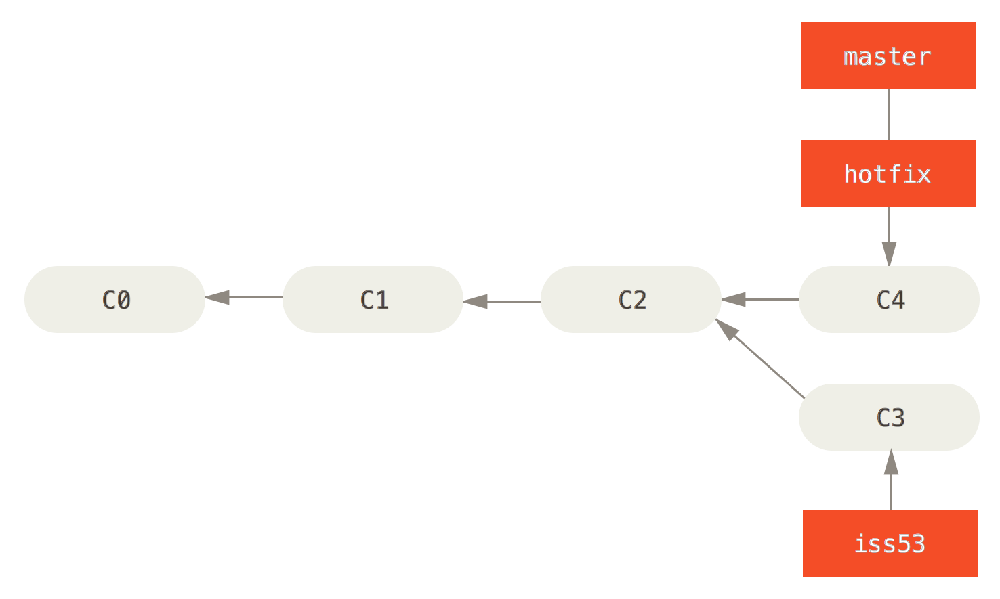

Git stores history as a directed acyclic graph (DAG).
Think about what you're doing to the history graph before you merge or rebase!
Git's built in documentation is the best resource for individual git commands
git help --all
git help --guide
git merge --helpPull is a complex command. It performs two operations:
Run these commands yourself; You can be explicit about how these operations are done
Fetch downloads all history from a remote repository
git fetch
git fetch origin
git fetch --allYou have committed no local changes, and now you want to update to a newer upstream revision. In this case, a new commit is not needed to store the combined history; instead, the HEAD (along with the index) is updated to point at the named commit, without creating an extra merge commit.
Update your branch to the tracking branch
git fetch
git merge --ff-onlyThe merge will be aborted if fastforward is not possible. In this case, you should either rebase or do a non-fastforward merge
Rebase unapplies your commits, fast-forwards, then reapplies your commits
git rebase origin/masterAll changes made by commits in the current branch but that are not in
Do not use this if you have merged from the upstream without pushing!
If the previous options don't work, then just do a regular merge
git mergeCommit all the time (borderline too often).
You can always clean up your commits before pushing. This allows you to go back a previous state with no consequences
Use interactive rebasing to clean up your commits before pushing
git rebase --interactive origin/UPSTREAMreword c78cd09 Refactor for es6/babel
squash e93f4cf Refactor based on static analysis
squash 2de2ce6 Refactor reducers
# Commands:
# p, pick = use commit
# r, reword = use commit, but edit the commit message
# e, edit = use commit, but stop for amending
# s, squash = use commit, but meld into previous commit
# f, fixup = like "squash", but discard this commit's log message
# x, exec = run command (the rest of the line) using shell
# d, drop = remove commitpReference logs, or "reflogs", record when the tips of branches and other references were updated in the local repository.
Use the reflog to go back to any ref you were working on
git reflog
4c3b20b (HEAD -> master) HEAD@{0}: rebase -i (finish): returning to refs/heads/master
4c3b20b (HEAD -> master) HEAD@{1}: rebase -i (squash): Refactor for es6/babel
cb10626 HEAD@{2}: rebase -i (squash): # This is a combination of 2 commits.
a9be7a1 HEAD@{3}: rebase -i (reword): Refactor for es6/babel
c78cd09 HEAD@{4}: cherry-pick: fast-forward
3f6cddd HEAD@{5}: rebase -i (start): checkout HEAD^^^
2de2ce6 (origin/master) HEAD@{9}: rebase -i (pick): Refactor reducersUse this to fix stupid mistakes!
Use git aliases to reduce typing
git config --global alias.co checkout
git config --global alias.cl clone
git config --global alias.fff '!git fetch && git merge --ff-only'git co master
git clone git@github.com/sgillespie/techtalk-git-tips
git fff